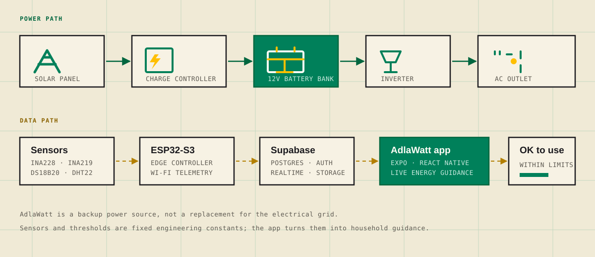

Make stored energy visible
See battery level, solar input, load, voltage, and temperature in one live view instead of guessing from a few indicator lights.
Off-grid solar · IoT · mobile
AdlaWatt pairs an ESP32-S3 energy monitor with an Expo mobile app, so households can see what their battery can safely power during an outage.
Academic capstone · Northern Bukidnon State College · Philippines
Why it exists
A backup battery is only useful when you know what it can carry. AdlaWatt makes stored solar energy visible, understandable, and easier to plan around.
See battery level, solar input, load, voltage, and temperature in one live view instead of guessing from a few indicator lights.
Electronics guidance compares remaining energy, battery voltage, and device power draw before you plug something in.
When connectivity drops, the app keeps the last cached readings visible with a clear offline banner.
System flow
Power moves through the hardware. Data moves through the ESP32, Supabase, and the mobile app.
A solar panel charges the battery through a charge controller.
Two ZENOVA 30Ah batteries hold 756 Wh nominal, with 604.8 Wh usable.
An inverter supplies the built-in AC outlet for compatible electronics.
An ESP32-S3 reads solar, load, voltage, and temperature sensors.
The app shows live status and labels electronics OK to use or not advisable.

Current status: the mobile app is integrated with Supabase; the ESP32 hardware feed is being wired up end to end.
What the app does
The app turns raw sensor readings into the information a household actually needs during an outage.
01 · Live data
Battery percentage, voltage, watt-hours, time remaining, charge or discharge status, load, depth of discharge, solar input, and temperatures.
02 · Guidance
Each electronics item is labeled OK to use or not advisable based on remaining energy, voltage, and power draw.
03 · Forecast
Current conditions and a five-day solar forecast that flags the best day to charge. Locations within 10 km of the configured Bukidnon samples resolve to a local label.
04 · Alerts
Automatic alerts for battery, temperature, solar, load, and device status — delivered in-app, by email for alerts, with vibration and daily reminders.
05 · History
Seventeen charts across battery, solar, energy, health, and usage, with CSV and PDF export for documentation.
06 · Resilience
The dashboard keeps the last cached readings visible with an offline banner when there is no connection.
Electronics guidance
Pick the electronics you plan to use. AdlaWatt compares three inputs and gives a clear recommendation before the load is connected.
Illustrative logic
Recommendations depend on live readings. This card illustrates the decision model, not a live device state.
Hardware
A transportable power enclosure, a small sensor stack, and an ESP32-S3 that connects the physical system to the app.
Project status
AdlaWatt is an academic capstone project in active development. The app already covers authentication, monitoring, electronics guidance, analytics, notifications, and offline behavior. The ESP32 hardware feed is the remaining integration work.
Follow the build on GitHubQuestions
The short answers to the questions people ask most about the system, the app, and the project.
AdlaWatt is a transportable off-grid solar power and backup system with an ESP32 IoT monitor and a mobile app for real-time energy monitoring, electronics guidance, notifications, and outage planning.
An ESP32-S3 reads voltage, current, and temperature sensors, sends the readings to Supabase, and the AdlaWatt mobile app displays live battery, solar, load, and system-health data.
AdlaWatt works with compatible household electronics through its built-in AC outlet. The app compares remaining energy, battery voltage, and device power draw to label each item OK to use or not advisable.
No. AdlaWatt is an academic capstone prototype in development and is not a commercial product.
The repository is publicly viewable, but no open-source license is specified. Reuse, redistribution, or modification requires permission from the authors.
AdlaWatt was developed by the AdlaWatt Research and Development Team at Northern Bukidnon State College in Bukidnon, Philippines.
Follow the build
The repository contains the Expo app, Supabase schema and migrations, ESP32 integration notes, hardware documentation, and the project’s user manual.